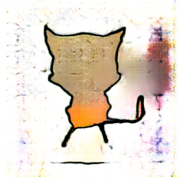
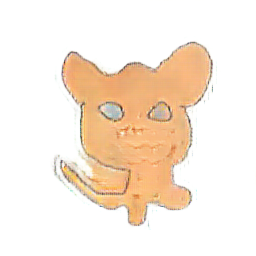
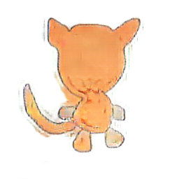
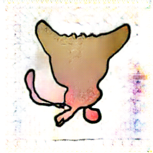
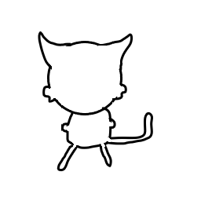
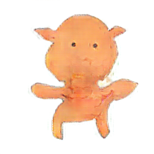
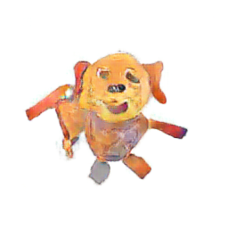
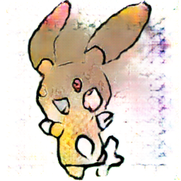
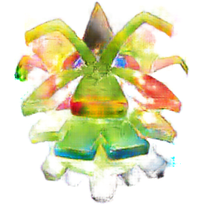
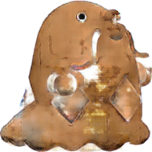

| name | input | export_new_L1 | export_WGAN | export_WGAN_L1 | |
|---|---|---|---|---|---|
| .ipynb_checkpoints | |||||
| 1.png | | | |||
| 10.png | | |  | ||
| 11.png | |  | | ||
| 12.png | | ||||
| 13.png | |  | |||
| 14.png | | | |  | |
| 15.png |  | | |||
| 16.png | |  | |||
| 17.png | | | |||
| 18.png |  | ||||
| 19.png | | | |||
| 2.png | | ||||
| 3.png | |  | |||
| 4.png | |  | |||
| 5.png |  | ||||
| 6.png | | | |||
| 7.png | | ||||
| 8.png | | ||||
| 9.png | | ||||
| .ipynb_checkpoints | |||||
| .ipynb_checkpoints | |||||
| 1.png | | | | ||
| 10.png | | | | ||
| 11.png | | | | ||
| 12.png | | | |||
| 13.png | | | |||
| 14.png | | | | | |
| 15.png | | | |||
| 16.png | | | |||
| 17.png | | | | ||
| 18.png | | ||||
| 19.png | | | | ||
| 2.png | | | |||
| 3.png | | | |||
| 4.png | | | |||
| 5.png | | ||||
| 6.png | | | | ||
| 7.png | | | |||
| 8.png | | | |||
| 9.png | | |